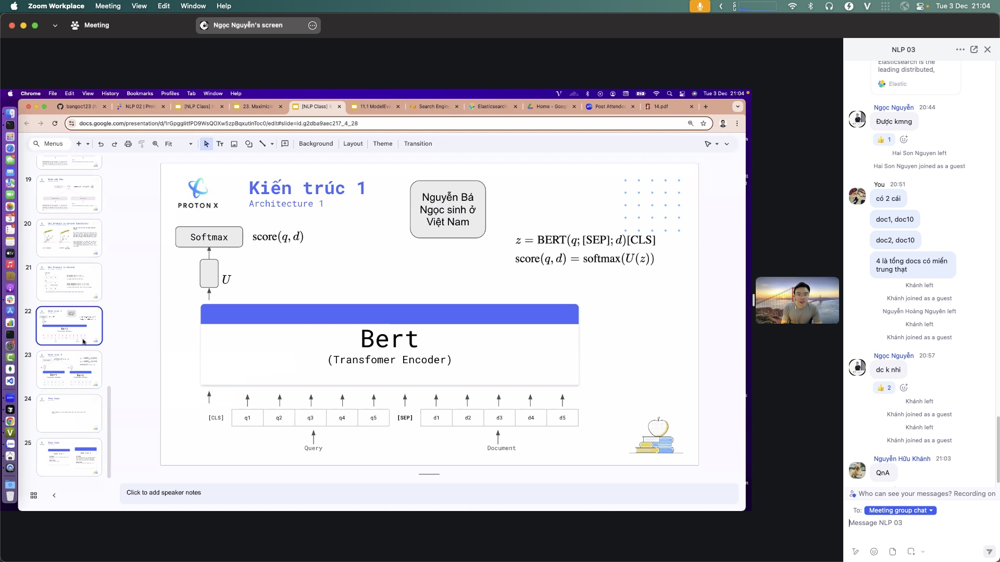

Concept · vector-databaseteaching
Vector database · nearest neighbors fast
Store millions of embeddings and answer “closest to this?” in milliseconds — infrastructure under RAG and semantic search.
chunk→embed→index→top-k
01AI Lab
Whyscale
Why brute force dies
scan
Linear scan
Checking every vector is too slow at real scale.
ann
ANN indexes
HNSW / IVF trade a little accuracy for huge speed.
meta
Metadata matters
Filter by source/date/tags before or after search.
02notes/vector-database.md
Vector DBideas
Key ideas
nn
Nearest neighbor
Query vector → k closest by cosine or dot.
ann
Approximate
Good enough for search; orders of magnitude faster.
crud
CRUD + filter
Data changes; filters keep results relevant.
Keywords: ANN · faiss · elasticsearch · pgvector · Read: notes/vector-database.md
03notes/vector-database.md
Illustrationvector-db-ann.png
Illustration

04AI Lab · illustration
Illustrationvector-db-flow.svg
Illustration

05AI Lab · illustration
Illustrationembed-then-query.jpg
Illustration

06AI Lab · illustration
Illustrationcosine-vs-dot.jpg
Illustration

07AI Lab · illustration
Choicestools
Pick by need
| Tool | Strength | Gap |
|---|---|---|
| FAISS | In-memory speed | No durable CRUD out of the box |
| Elasticsearch kNN | Keyword + vector + scale | Heavier ops |
| pgvector / Chroma | Simple apps | Not for huge distributed loads |
08notes/vector-database.md
Pipelinepipeline
Documents in · answers out
docs→chunk→embed→vector DB→top-k→RAG
09feeds rag.md · semantic-search.md
Pitfallswatch
Common failures
dim
Dim mismatch
Query encoder must match index encoder.
stale
Stale index
Changed docs need re-embed + upsert.
metric
Wrong metric
Cosine vs dot — ranking drifts if mismatched.
10notes/vector-database.md
endAI Lab